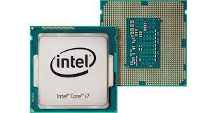
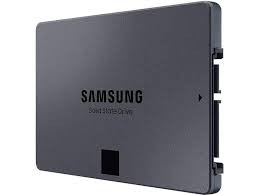
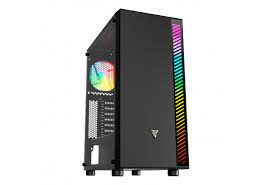
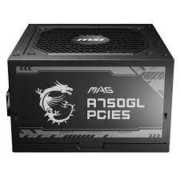
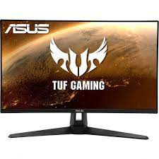

Placa base
La placa base es esa en la que se conectan todos los componentes internos del ordenador, desde el procesador hasta los discos duros, la memoria RAM o la tarjeta gráfica. Cada uno de estos componentes tiene su propia ranura para que puedas conectarla.

Características
- Tipo de socket o zócalo: Intel® LGA 1700.
- Tipo de memoria: DDR4.
- Capacidad máxima de memoria soportada: 4 x DIMM, Max. 128GB, DDR4 5333(OC)/ 5066(OC)/ 5000(OC)/ 4800(OC)/ 4600(OC)/ 4400(OC)/ 4266(OC)/ 4000(OC)/ 3733(OC)/ 3600(OC)/ 3466(OC)/ 3400(OC)/ 3333(OC)/ 3200 /3000/ 2933/ 2800/ 2666/ 2400/ 2133 Non-ECC,
- Formato: ATX
- Dispone de módulo Wi-Fi: Si
Precio
168€ en PcComponentes
Procesador
El procesador es el cerebro del sistema, justamente procesa todo lo que ocurre en la PC y ejecuta todas las acciones que existen. Cuanto más rápido sea el procesador que tiene una computadora, más rápidamente se ejecutarán las órdenes que se le den a la máquina.

Características
- Marca: Intel Core
- Socket: LGA 1700
- Gráficos integrados (sí/no): No
- Núcleos: 12
- Frecuencia base: 2.5 GHz
Precio
135€ en PcComponentes
Memoria RAM
La memoria RAM es la memoria principal de un dispositivo, esa donde se almacenan de forma temporal los datos de los programas que estás utilizando en este momento. Sus siglas significan Random Access Memory, lo que traducido al español sería Memoria de Acceso Aleatorio, y es un tipo de memoria que te puedes encontrar en cualquier dispositivo, desde ordenadores de sobremesa hasta teléfonos móviles.

Características
- Tipo: DDR4
- Formato: 288 pines (DIMM) y 256 pines (SO-DIMM)
- Capacidad: 2133 MHz
Precio
45€ en PcComponentes
Almacenamiento
El almacenamiento de datos consiste en la conservación de información empleando una tecnología específicamente desarrollada para mantener los datos y que se encuentren accesibles siempre que sean necesarios. El almacenamiento de datos se refiere al uso de medios de grabación para conservar los datos utilizando PC y otros dispositivos. Las formas más frecuentes de almacenamiento de datos son el almacenamiento de archivos, el almacenamiento en bloque y el almacenamiento de objetos, cada uno de los cuales resulta adecuado para un fin diferente.

Características
- Capacidad: 2 x SATA 6Gb/s cables, 2 x M.2 Rubber Package, 1 x M.2 SSD screw package, 1 x ASUS Wi-Fi.
- Tipo de disco: 2x2 de tipo C® trasero, conector frontal USB 3.2 Gen.
- Conector: SATA
Precio
68€ en PcComponentes
Torre
La torre. Es una carcasa de metal o plástico, y quizá, la parte más importante del computador. En su interior se encuentran componentes que hacen que todas las otras partes cumplan su función. Es el equivalente al cerebro del computador.

Características
- Tamaño: 335mm x 200mm x 440mm
Precio
28€ en PcComponentes
Fuente de alimentación
Una fuente de alimentación es un componente esencial de cualquier dispositivo electrónico ya que es ella quien se encarga de darle vida. En cualquier equipo, por pequeño que sea, siempre hay una fuente de alimentación, aunque no la veamos.

Características
- Potencia: 750 W
- Formato: ATX
- Eficiencia: 90%
Precio
125€ en PcComponentes
Monitor
El monitor del computador, también conocido como pantalla, muestra la información de tu equipo como imágenes y textos, que son generados gracias a una tarjeta de video que se encuentra en el interior de la torre del computador.

Características
- Resolución: 2560 x 1440
- Pulgadas: 27
- Tipo de conexión con la placa: HDMI
Precio
249€ en PcComponentes